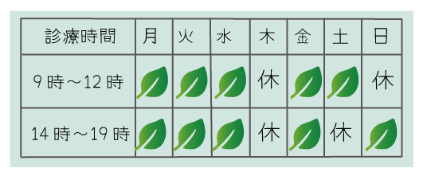

受付時間：9時12時 / 13~18時
休診日：木曜・土曜午後・日曜
〒123-456
東京都東上野0-0-0
TEL00-0000-0000
English
文字サイズ
拡大
標準
佐藤医院では、患者様のご都合に合わせた診療を提供できるよう、柔軟な診察時間を設けております。 以下の診察時間をご確認いただき、ご来院の際にご利用ください。
診療時間
受付時間：9時12時 / 13~18時
休診日：木曜・土曜午後・日曜
※祝祭日も診察を行なっておりますが休診日もございますので事前にご確認ください
診療科目
・内科
・予防医療
・呼吸器科
・健康診断
・循環器科
・生活習慣病（高血圧、糖尿病等）治療・管理
※その他、ご不明点があればお電話またはメールでお問い合わせください。
所在地
住所 〒123-4567 東京都台東区上野0丁目 0 - 0
アクセス
• 最寄駅: JR上野より徒歩5分 / 当院専用の無料駐車場10台分あり
休診日：木曜・土曜午後・日曜
※ご来院の際は、交通状況にご注意ください。最寄駅から徒歩5分の距離にあり、便利な立地です。
お問い合わせ
電話番号: 00-0000-0000
Eメール: info@sato-clinic-test.jp
ファックス: 00-0000-0000